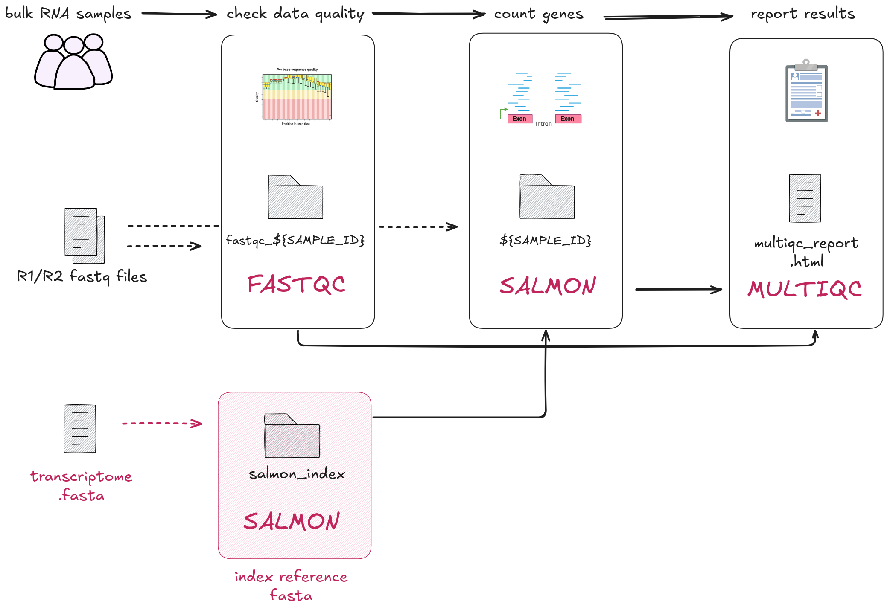

2.1 Implementing a simple process with a container
Learning objectives
- Implement a Nextflow process that takes a single file as input.
- Understand the importance of containers in ensuring consistent and reproducible execution across processes.
- Store output files with the
publishDirdirective.
In this lesson we will be implement 00_index.sh as our first Nextflow process, INDEX. Here, we are working with the first step of the RNA-seq data processing workflow: indexing the transcriptome for downstream processes. To do this, we will need to run Salmon's indexing mode.

Open the bash script 00_index.sh:
mkdir "results"
salmon index \
--transcripts data/ggal/transcriptome.fa \
--index results/salmon_index
- The script first creates a
results/folder then runs thesalmon indexcommand. - The Salmon
--transcriptsflag indicates that the path to the input transcriptome file isdata/ggal/transcriptome.fa. - The Salmon
--index results/salmon_indexflag tellssalmonto save the output index files in a directory calledsalmon_index, within the newly createdresultsdirectory.
Avoid hardcoding arguments by using parameters
The paths to the transcriptome file (data/ggal/transcriptome.fa) and the output directory (results/salmon_index) are hardcoded in this bash script. If you wanted to change the input transcriptome file or the output location, you must manually edit the script. This makes our scripts less flexible and easy to use.
Nextflow addresses the issue of hardcoded paths by allowing parameters to be passed dynamically at runtime as parameters (params).
2.1.1 Building the process
In the empty main.nf script, add the following process scaffold with the
script definition:
process INDEX {
[ directives ]
input:
< process inputs >
output:
< process outputs >
script:
"""
salmon index --transcripts $transcriptome --index salmon_index
"""
}
It contains:
- The empty
input:block for us to define the input data for the process. - The empty
output:block for us to define the output data for the process. - The
script:block prefilled with the command that will be executed.
Info
The process script
block is executed as a Bash script by default. In Part 2 of the workshop, we will
only be using Nextflow variables within the script block.
Next, we will edit the input and output definitions to match the specific
data and results for this process. In the 00_index.sh script, the relevant
information is:
- The fasta (
.fa) file defined by the variable$transcriptomeand provided to the--transcriptsflag - The index output directory
salmon_index/provided to the--indexflag
Defining inputs and outputs
Remember, input and output definitions require a qualifier and name. For example:
The qualifier defines the type of data, and the names are treated like variables.
process INDEX {
[ directives ]
input:
path transcriptome
output:
path 'salmon_index'
script:
"""
salmon index --transcripts $transcriptome --index salmon_index
"""
}
Note that the input path transcriptome refers to a variable, meaning the
actual file or directory provided as input can be changed depending on the data
you provide it. The output path 'salmon_index' is fixed, meaning it will
always create an output folder called salmon_index, no matter what the input
is.
This is how Nextflow can handle different inputs while always producing the same output name.
More information on using input and output blocks can be found in the process inputs and outputs Nextflow documentation.
2.1.2 Save files to an output directory with publishDir
Next we will implement the Nextflow equivalent of saving the output files into a
results/ directory.
Replace [ directives ] in your main.nf script with the publishDir
directive, specifying the directory name as "results" and the mode as
'copy'. Your main.nf should look like this:
process INDEX {
publishDir "results", mode: 'copy'
input:
path transcriptome
output:
path 'salmon_index'
script:
"""
salmon index --transcripts $transcriptome --index salmon_index
"""
}
This process is now directed to copy all output files into a results/
directory. This saves having to specify the output directory in the script
definition each process, or a tedious mv salmon_index/ results/ step.
Nextflow also handles whether the directory already exists or if it
should be created. In the 00_index.sh script you had to manually make a
results directory with mkdir -p "results.
More information and other modes can be found on publishDir.
2.1.3 Using containers
Nextflow recommends using containers to ensure reproducibility and portability of your workflow. Containers package all the software and dependencies needed for each tool into a self-contained environment. This means you don’t have to manually install anything on your system, and your workflow will work consistently across different systems — whether you're running it on your local machine, a cluster, or in the cloud. Containers make it easier to share your workflow with others and ensure it runs the same way every time, no matter where it's executed.
Nextflow supports multiple container runtimes. In this workshop, we'll be demonstrating the value containers can bring to your workflow by using Docker.
Tip: different tools for different purposes
In this workshop, we're using Docker to run containers. However, for some systems like HPC where you won't have administrative access to your environment, other options like Singularity/Apptainer will be more suitable.
You don't have to write your own containers to run in your workflow. There are many container repositories out there. We highly recommend using Biocontainers wherever possible. Biocontainers are pre-built and tested containers specifically for bioinformatics tools. They have a huge library and great community support.
You can find Biocontainers at the following repositories:
Add the following container directive to the INDEX process, above
publishDir:
In Nextflow, we can specify that a process should be run within a specified container using the container directive.
Add the following container directive to the INDEX process, above publishDir:
process INDEX {
container "quay.io/biocontainers/salmon:1.10.1--h7e5ed60_0"
publishDir "results" mode: 'copy'
input:
path transcriptome
output:
path 'salmon_index'
script:
"""
salmon index --transcripts $transcriptome --index salmon_index
"""
}
You now have a complete process!
Usually, containers need to be downloaded using a command such as
docker pull [image]. All containers have been previously downloaded for the
workshop beforehand.
Tip: use one container per process
Using single containers for each process in your workflow is considered best practices for the following reasons:
- Flexibility: different processes require different tools (or versions). By using separate containers, you can easily tailor the container to the needs of each process without conflicts.
- Build and run efficiency: Smaller, process-specific containers are faster to load and run compared to one large container that has unnecessary tools or dependencies for every process.
- Easier Maintenance: it’s easier to update or modify one container for a specific process than to manage a large, complex container with many tools.
- Reproducibility: reduces the risk of issues caused by software conflicts.
Before we can run the workflow, we need to tell Nextflow to run containers using Docker. Nextflow requires Docker to be installed on your system in order for this to work. Docker has been pre-installed on your Virtual Machine.
We can tell Nextflow configuration to run containers with Docker by using the
nextflow.config file.
Create a nextflow.config file in the same directory as main.nf.
Note
You can create the file via the VSCode Explorer (left sidebar) or in the terminal with a text editor.
If you are using the Explorer, right click on part2 in the sidebar and
select "New file".
Add the following line to your config file:
| nextflow.config | |
|---|---|
You have now configured Nextflow to use Docker.
Tip
Remember to save your files after editing them!
2.1.4 Adding params and the workflow scope
Now that you have written your first Nextflow process, we need to prepare it for execution.
You can think of Nextflow processes as similar to a function definition in R or Python. We have defined what the process should do, but to actually run it, we need to call the process within the workflow and pass in the inputs.
To run the process, we need to call it inside the workflow{} block, where
we control how data flows through the pipeline. To provide the input data we
need to define parameters.
In the 00_index.sh script, the file data/ggal/transcriptome.fa was passed
as the input into salmon index.
We will pass in this file path with the params scope. Add the following to
the top of your main.nf script:
// pipeline input parameters
params.transcriptome_file = "$projectDir/data/ggal/transcriptome.fa"
Implicit variables in Nextflow
Nextflow provides a set of implicit variables that can be used in your workflows. These variables are predefined and can be used to access information about the workflow environment, configuration, and tasks.
We will use $projectDir to indicates the directory of the main.nf script. This is defined by Nextflow as the directory where the main.nf script is located.
The params and process names do not need to match!
In the INDEX process, we defined the input as a path called transcriptome, whereas
the parameter is called transcriptome_file. These do not need to be identical names
as they are called in different scopes (the INDEX process scope, and workflow scope,
respectively).
Recall that parameters are inputs and options that can be customised when the workflow is executed. They allow you to control things like file paths and options for tools without changing the process code itself.
We defined a default value for params.transcriptome in the main.nf script.
If we need to run our pipeline with a different transcriptome
file, we can overwrite this default in our execution command with
--transcriptome double hyphen flag.
Next, add the workflow scope at the bottom of your main.nf after the process:
// Define the workflow
workflow {
// Run the index step with the transcriptome parameter
INDEX(params.transcriptome_file)
}
This will tell Nextflow to run the INDEX process with
params.transcriptome_file as input.
Tip: Your own comments
As a developer you can to choose how and where to comment your code! Feel free to modify or add to the provided comments to record useful information about the code you are writing.
We are now ready to run our workflow!
2.1.5 Running the workflow
In the terminal, run the command:
Your output should look something like:
N E X T F L O W ~ version 24.04.4
Launching `main.nf` [chaotic_jones] DSL2 - revision: 6597720332
executor > local (1)
[de/fef8c4] INDEX | 1 of 1 ✔
Recall that the specifics of the output are randomly generated (i.e.
[chaotic_jones] and [de/fef8c4] in this example).
In this example, the output files for the INDEX process is output in
work/de/fef8c4....
You have successfully run your first workflow!
2.1.6 Inspecting the outputs
To observe exactly what command is being run for a process, we can attempt
to infer this information from the process definition in our main.nf
script. Given all the different parameters that may be applied at the process
level, it may not be very clear exactly what inputs are being fed in.
For more complex commands, it can be very hard to see what is actually happening in the code, given all the different variables and conditional arguments inside a process.
Hidden files in the work directory
Remember that the pipeline’s results are cached in the work directory. In addition to the cached files, each task execution directories inside the work directory contains a number of hidden files:
.command.sh: The command script run for the task..command.run: The command wrapped used to run the task..command.out: The task’s standard output log..command.err: The task’s standard error log..command.log: The wrapper execution output..command.begin: A file created as soon as the job is launched..exitcode: A file containing the task exit code (0 if successful)
Instead of trying to infer how the variable is being defined and applied to the process, let’s use the hidden command files saved for this task in the work/ directory.
Exercise
- Navigate to the
work/directory and open the.command.shfile. - Compare the
.command.shfile with00_index.sh.
Poll
In .command.sh, there are no longer hardcoded file paths (e.g. results/salmon_index and data/ggal.transcriptome.fa). What Nextflow directive and scope enable this?
Summary
In this lesson you have learned:
- How to implement a simple process with one input file
- How to define parameters in your workflow scripts and the command line
- How to use configure a process to run using a container
- How to output files in a dedicated
publishDir